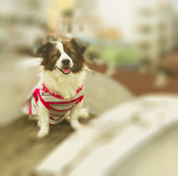

MY FAVOURITE THINGS
THINGS THAT GOT ME FEELING REAL GOOD
These are the things that got me feeling real happy everytime they pop up. Borrowing this line from Marie Kondo, and adding my little touches: "These ones spark joy!".

These are the things that got me feeling real happy everytime they pop up. Borrowing this line from Marie Kondo, and adding my little touches: "These ones spark joy!".